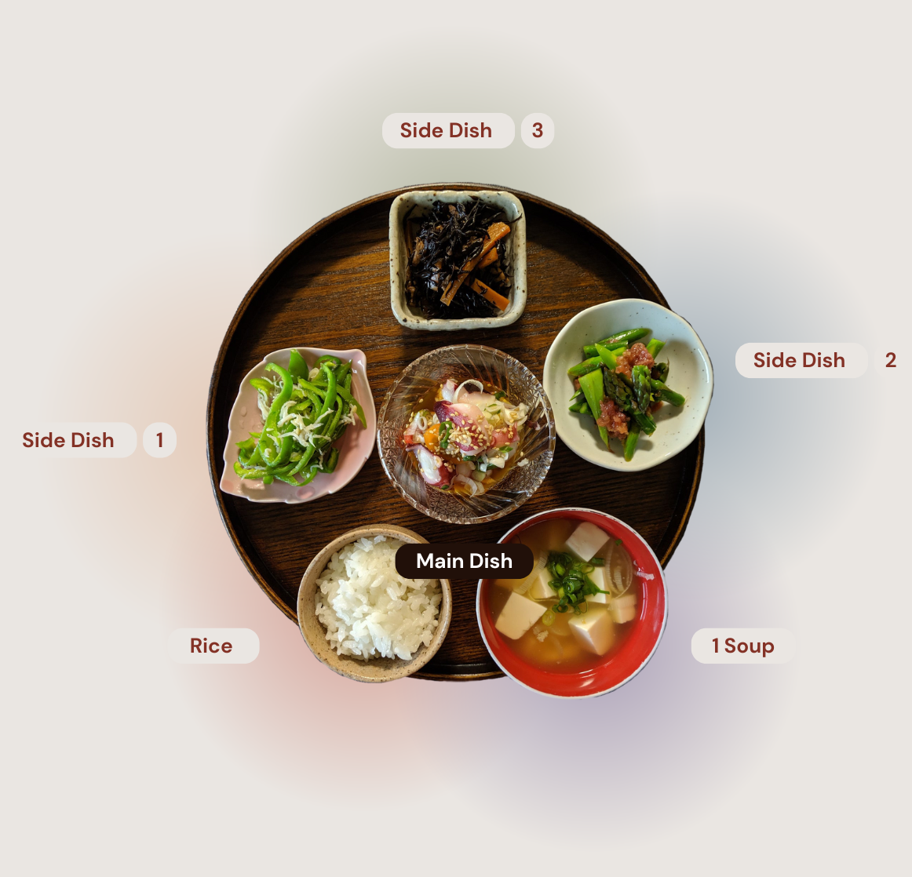
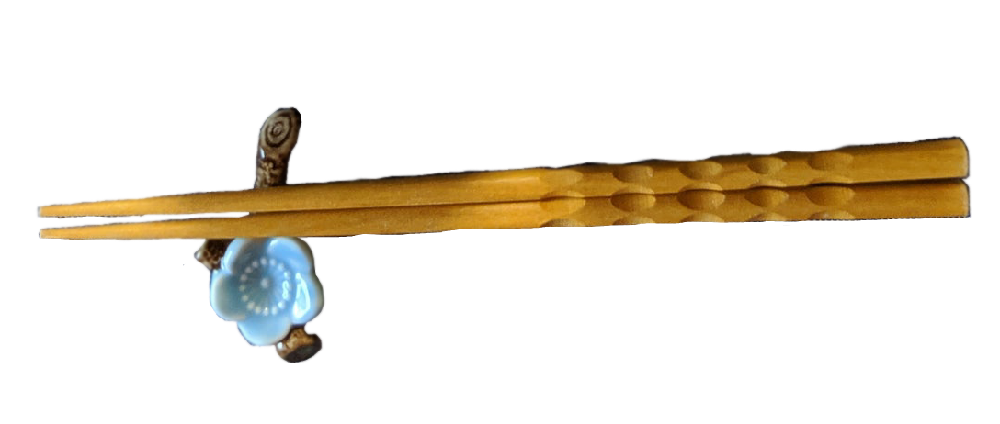

Your body needs macronutrients (carbs, protein, fat) for energy and micronutrients (vitamins, minerals) for overall health. Traditional Japanese meals naturally include these through balanced ingredients.
Ichiju Sansai (一汁三菜) is a Japanese traditional meal consisting of rice, protein (typically fish and tofu), and vegetables. This meal provides most of the essential nutrients as it is packed with macronutrients.
Ichiju Sansai typically includes:
(Protein)
(Vegetables)
(Optional)


The phrase ma-go-wa-ya-sa-shi-ii (まごわやさしい) has served as a guide to encourage a more plant and seafood-based meal.